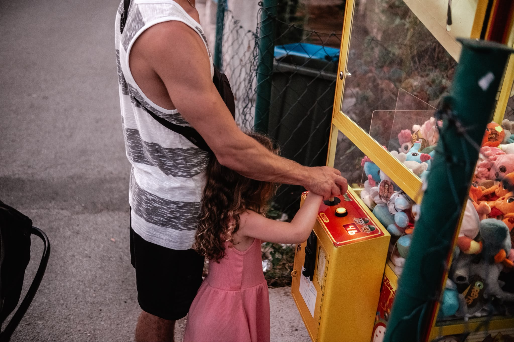

Portraits
Nur du – ruhig, editorial oder voller Bewegung.

Mehr Gefühl, weniger Pose
Ihr müsst vor meiner Kamera nichts können. Wir schaffen Raum für Bewegung, Nähe und kleine Überraschungen – ich halte fest, was dazwischen passiert.
Mehr über mich↘Die schönsten Bilder beginnen dort, wo man die Kamera vergisst.
Jedes Shooting ist anders. Was immer gleich bleibt: eine ruhige Begleitung, ein klares Gefühl für Licht und genug Freiheit für echte Momente.
Unkompliziert, persönlich und mit einem klaren Plan – damit ihr euch einfach fallen lassen könnt.
Ihr erzählt mir, was euch wichtig ist. Wir finden Stimmung, Ort und den passenden Zeitpunkt.
Kein starres Posieren. Ich gebe sanfte Impulse und lasse genug Platz für das, was spontan entsteht.
Sorgfältig ausgewählt und liebevoll bearbeitet – als zeitlose Erinnerung für euch.
Hallo, ich bin Yvi
Mich faszinieren Licht, das durch Haare fällt, ungeplantes Lachen und diese winzigen Momente, die sonst viel zu schnell verschwinden.
Meine Bildsprache ist warm, ruhig und gefühlvoll. Beim Shooting begleite ich euch aufmerksam und unaufdringlich – mit klarer Richtung, aber ohne euch in Formen zu pressen.
Erzähl mir von euch
Schreibt mir ein paar Zeilen über euch und eure Idee. Ich melde mich persönlich bei euch zurück.
Vielleicht ist genau jetzt
der richtige Moment.